<div>
    <mat-toolbar color="primary">
       
      <h1>Administración de Reuniones</h1>
    </mat-toolbar>

    <nav mat-tab-nav-bar [tabPanel]="tabPanel">
      <a mat-tab-link routerLink="./agregar" routerLinkActive="active"> Agregar Reunión </a>
      <a mat-tab-link routerLink="./listar" routerLinkActive="active"> Listado de Reuniones </a>
      <a mat-tab-link routerLink="/login" routerLinkActive="active" (click)="logout()"> Salir </a> <!-- faltaría hacer un logout = cerrar sesión-->
    </nav>
    <!-- podría mostrar nombre de usuario -->
    <mat-tab-nav-panel #tabPanel>
      <router-outlet></router-outlet>
    </mat-tab-nav-panel>

</div>
  